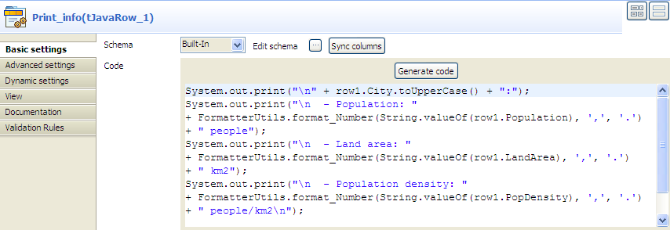

|
Component Family |
Custom Code | |
|
Function |
tJavaRow allows you to enter customized code which you can integrate in a Talend programme. With tJavaRow, you can enter the Java code to be applied to each row of the flow. | |
|
Purpose |
tJavaRow allows you to broaden the functionality of Talend Jobs, using the Java language. | |
|
Basic settings |
Schema and Edit Schema |
A schema is a row description, i.e., it defines the number of fields to be processed and passed on to the next component. The schema is either Built-in or stored remotely in the Repository. Click Edit Schema to make changes to the schema. Note that if you make changes, the schema automatically becomes Built-in. Click Sync columns to retrieve the schema from the previous component in the Job. NoteThis component offers the advantage of the dynamic schema feature. This allows you to retrieve unknown columns from source files or to copy batches of columns from a source without mapping each column individually. For further information about dynamic schemas, see Talend Data Integration Studio User Guide. |
|
|
|
Built-in: The schema is created and stored locally for this component only. Related topic: see Talend Data Integration Studio User Guide. |
|
|
|
Repository: The schema already exists and is stored in the Repository, hence can be reused. Related topic: see Talend Data Integration Studio User Guide. |
|
|
Code |
Enter the Java code to be applied to each line of the data flow. |
|
Advanced settings |
Import |
Enter the Java code required to import, if required, the external library used in the Main code field of the Basic settings tab. |
|
|
tStatCatcher Statistics |
Select this check box to collect the log data at a component level.. |
|
Usage |
This component is used as an intermediary between two other components. It must be linked to both an input and an output component. | |
|
Limitation |
Knowledge of Java language is necessary. | |
In this scenario, the information of a few cities read from an input delimited file is transformed using Java code through the tJavaRow component and printed on the console.

Drop a tFileInputDelimited component and a tJavaRow component from the Palette onto the design workspace, and label them to better identify their roles in the Job.
Connect the two components using a Row > Main connection.
Double-click the tFileInputDelimited component to display its Basic settings view in the Component tab.

In the File name/Stream field, type in the path to the input file in double quotation marks, or browse to the path by clicking the [...] button, and define the first line of the file as the header.
In this example, the input file has the following content:
City;Population;LandArea;PopDensity Beijing;10233000;1418;7620 Moscow;10452000;1081;9644 Seoul;10422000;605;17215 Tokyo;8731000;617;14151 New York;8310000;789;10452
Click the [...] button next to Edit schema to open the [Schema] dialog box, and define the data structure of the input file. Then, click OK to validate the schema setting and close the dialog box.

Double-click the tJavaRow component to display its Basic settings view in the Component tab.
Click Sync columns to make sure that the schema is correctly retrieved from the preceding component.
In the Code field, enter the code to be applied on each line of data based on the defined schema columns.
In this example, we want to transform the city names to upper case, group digits of numbers larger than 1000 using the thousands separator for ease of reading, and print the data on the console:
System.out.print("\n" + row1.City.toUpperCase() + ":"); System.out.print("\n - Population: " + FormatterUtils.format_Number(String.valueOf(row1.Population), ',', '.') + " people"); System.out.print("\n - Land area: " + FormatterUtils.format_Number(String.valueOf(row1.LandArea), ',', '.') + " km2"); System.out.print("\n - Population density: " + FormatterUtils.format_Number(String.valueOf(row1.PopDensity), ',', '.') + " people/km2\n");Warning
In the Code field, "row1" refers to the name of the link that connects to tJavaRow. If you rename the link, you have to modify the code.

This scenario describes a three-component Job that uses Java code through a tJavaRow component to display the content of an input file and pass it to the output component. As all the components in this Job support the dynamic schema feature, we can leverage this feature to save the time of configuring each column of the schema.
Drop tFileInputDelimited, tJavaRow, and tFileOutputDelimited from the Palette onto the design workspace, and label them according to their roles in the Job.
Connect the components in a series using Row > Main links.

Double-click the tFileInputDelimited component, which is labeled Source, to display its Basic settings view.

Warning
The dynamic schema feature is only supported in Built-In mode and requires the input file to have a header row.
In the File name/Stream field, type in the path to the input file in double quotation marks, or browse to the path by clicking the [...] button.
In the Header field, type in 1 to define the first line of the file as the header.
Click the [...] button next to Edit schema to open the [Schema] dialog box.

Click the [+] button to add a column, give a name to the column, dyna in this example, and select Dynamic from the Type list. This dynamic column will retrieve the three columns, FirstName, LastName and Address, of the input file.
Click OK to validate the setting and close the dialog box.
Double-click the tFileOutputDelimited component, which is labeled Target, to display its Basic settings view.

Define the output file path in the File Name field.
Select the Include Header check box to include the header in the output file. Leave all the other settings are they are.
Double-click tJavaRow to display its Basic settings view and define the components properties.

Click Sync columns to make sure that the schema is correctly retrieved from the preceding component.
In the Code field, enter the following code to display the content of the input file and pass the data to the next component based on the defined dynamic schema column:
System.out.println(row1.dyna); row2.dyna = row1.dyna;
Warning
In the Code field, "row1" and "row2" correspond to the names of the links to and from tJavaRow. If you rename the links, you have to modify the code.